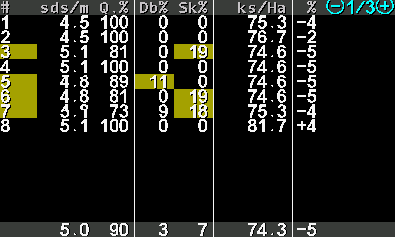
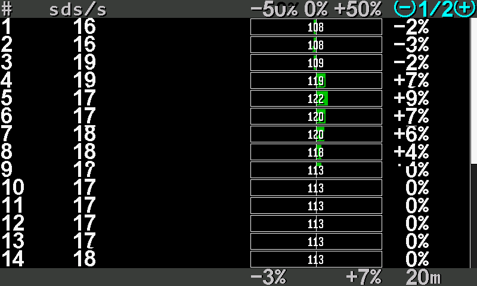

L'écran Table
Les mesures de chaque section en chiffres — quels tableaux a votre machine, ce que signifie chaque colonne et comment lire les couleurs.
L'écran Table (tableau) montre les mesures de chaque section en chiffres, une ligne par section. Il répond à la question que le diagramme ne peut pas traiter : quelle section exactement, et de combien. Ouvrez-le depuis l'écran d'accueil avec « HOME » ; quittez-le avec « BACK ».
Un semoir monograine en mode « Precise »

- #. Le numéro de la section.
- sds/m. Graines par mètre, mesurées à l'instant.
- Q.%. Qualité — la part de graines placées une à une, comme voulu.
- Db%. Doubles — deux graines là où une était prévue.
- Sk%. Manques — un vide là où une graine était prévue.
- ks/Ha. La dose appliquée en milliers de graines par hectare (dans le deuxième tableau : graines par mètre).
- %. L'écart de cette section par rapport à la dose réglée.
- Numéro de tableau. Ce tableau et le nombre de tableaux, entre (−) et (+) — « MINUS » et « PLUS » changent de tableau.
- Numéro de section sur fond jaune. Quelque chose sur cette ligne dérive vers sa limite.
- Valeur sur fond jaune. Le chiffre qui a dérivé — ici les manques de la section 7.
- Totaux. Les mêmes colonnes pour toute la machine.
Une valeur sur fond jaune dérive vers sa limite ; sur fond rouge, elle l'a dépassée. Une ligne entière en gris avec ! est une section mise hors surveillance ; une ligne en rouge avec × est un capteur qui ne répond pas, avec ? un appareil d'un mauvais type.
Un semoir à céréales en mode « Flow »

- #. Le numéro de la section.
- sds/s. Graines par seconde. Des tirets tant que rien n'est compté.
- Échelle des écarts. De −50 % à +50 %, en passant par 0.
- Barre d'écart. À quelle distance cette section se trouve de la dose réglée.
- %. Le même écart en chiffre.
- Numéro de tableau. Tableau 1 sur 2 — le second contient les sections d'engrais.
- Écart le plus bas. La section la plus éloignée sous la dose.
- Écart le plus haut. La section la plus éloignée au-dessus de la dose.
- Intervalle de recalcul. Le tronçon sur lequel les chiffres sont recueillis — « Recalculation,m » (recalcul) des capteurs.
Quels tableaux a votre machine
| Tableau | Affiché quand |
|---|---|
| Compteurs de graines — graines par seconde ou par mètre, avec les barres d'écart | Toujours. |
| Dose par surface (milliers par hectare) et dose par distance (graines par mètre) | Seulement dans le mode de contrôle de semis « Precise ». |
| Engrais solide | La machine a des capteurs d'engrais et le mode de contrôle de l'engrais n'est pas « Precise ». |
| Engrais liquide | La machine a des capteurs d'engrais liquide. |
En mode « Precise », le semoir monograine ci-dessus a trois tableaux : dose par surface (1/3), dose par distance (2/3) et compteurs de graines (3/3) — le nombre de graines semées par chaque section, à côté des barres d'écart, avec le total de la machine en milliers en bas.

Travailler avec l'écran
| Ce que vous voulez | Bouton | Ou geste |
|---|---|---|
| Tableau suivant ou précédent | « PLUS » / « MINUS » | Long glissement vers la gauche ou la droite avec deux doigts |
| Faire défiler les lignes | « UP » / « DOWN » | Glissement vers le haut ou le bas |
| Remettre les mesures à zéro | « MENU » | Toucher avec deux doigts |
| Aller à Statistics | « HOME » | Glissement vers la gauche |
| Retour à l'écran d'accueil | « BACK » | Glissement vers la droite |
Remise à zéro : Remettre les mesures à zéro.
Le tableau pendant le semis
Les lignes changent à chaque comptage ; une ligne qui dérive devient jaune.

Sur les grandes machines, les rangs ne tiennent pas sur une page : « UP » et « DOWN » les font défiler.

Votre machine fait quelque chose que cette page n'explique pas ? Écrivez à support@agriwelt.com — un ingénieur vous répond.